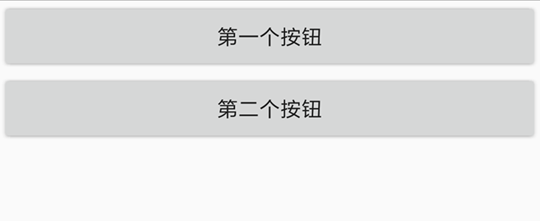
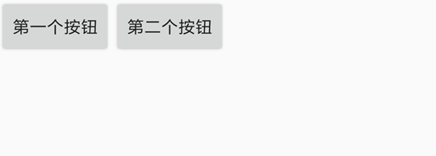
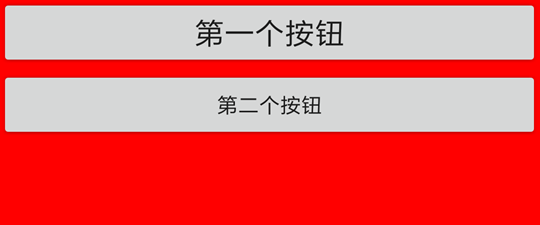

ui入门介绍
ui入门介绍
ui模块提供了编写用户界面的支持。
提示
给Android开发者或者高阶用户的提醒，Auto.js的UI系统来自于Android，所有属性和方法都能在Android源码中找到。如果某些代码或属性没有出现在Auto.js的文档中，可以参考Android的文档。
带有ui的脚本的的最前面必须使用"ui";指定ui模式，否则脚本将不会以ui模式运行。正确示范:s
"ui";
//脚本的其他代码
字符串"ui"的前面可以有注释、空行和空格(v4.1.0新增)，但是不能有其他代码。
界面是由视图(View)组成的。View分成两种，控件(Widget)和布局(Layout)。控件(Widget)用来具体显示文字、图片、网页等，比如文本控件(text)用来显示文字，按钮控件(button)则可以显示一个按钮并提供点击效果，图片控件(img)则用来显示来自网络或者文件的图片，除此之外还有输入框控件(input)、进度条控件(progressbar)、单选复选框控件(checkbox)等；布局(Layout)则是装着一个或多个控件的"容器"，用于控制在他里面的控件的位置，比如垂直布局(vertical)会把他里面的控件从上往下依次显示(即纵向排列)，水平布局(horizontal)则会把他里面的控件从左往右依次显示(即横向排列)，以及帧布局(frame)，他会把他里面的控件直接在左上角显示，如果有多个控件，后面的控件会重叠在前面的控件上。
我们使用xml来编写界面，并通过ui.layout()函数指定界面的布局xml。举个例子：
"ui";
$ui.layout(
<vertical>
<button text="第一个按钮"/>
<button text="第二个按钮"/>
</vertical>
);
在这个例子中，第3~6行的部分就是xml，指定了界面的具体内容。代码的第3行的标签<vertical> ... </vertical>表示垂直布局，布局的标签通常以<...>开始，以</...>结束，两个标签之间的内容就是布局里面的内容，例如<frame> ... </frame>。在这个例子中第4, 5行的内容就是垂直布局(vertical)里面的内容。代码的第4行是一个按钮控件(button)，控件的标签通常以<...开始，以/>结束，他们之间是控件的具体属性，例如<text ... />。在这个例子中text="第一个按钮"的部分就是按钮控件(button)的属性，这个属性指定了这个按钮控件的文本内容(text)为"第一个按钮"。
代码的第5行和第4行一样，也是一个按钮控件，只不过他的文本内容为"第二个按钮"。这两个控件在垂直布局中，因此会纵向排列，效果如图：

如果我们把这个例子的垂直布局(vertical)改成水平布局(horizontal)，也即：
"ui";
ui.layout(
<horizontal>
<button text="第一个按钮"/>
<button text="第二个按钮"/>
</horizontal>
);
则这两个按钮会横向排列，效果如图：

一个控件可以指定多个属性(甚至可以不指定任何属性)，用空格隔开即可；布局同样也可以指定属性，例如:
"ui";
ui.layout(
<vertical bg="#ff0000">
<button text="第一个按钮" textSize="20sp"/>
<button text="第二个按钮"/>
</vertical>
);
第三行bg="#ff0000"指定了垂直布局的背景色(bg)为"#ff0000"，这是一个RGB颜色，表示红色(有关RGB的相关知识参见RGB颜色对照表)。第四行的textSize="20sp"则指定了按钮控件的字体大小(textSize)为"20sp"，sp是一个字体单位，暂时不用深入理会。上述代码的效果如图：

一个界面便由一些布局和控件组成。为了便于文档阅读，我们再说明一下以下术语：
- 子视图, 子控件: 布局里面的控件是这个布局的子控件/子视图。实际上布局里面不仅仅只能有控件，还可以是嵌套的布局。因此用子视图(Child View)更准确一些。在上面的例子中，按钮便是垂直布局的子控件。
- 父视图，父布局：直接包含一个控件的布局是这个控件的父布局/父视图(Parent View)。在上面的例子中，垂直布局便是按钮的父布局。